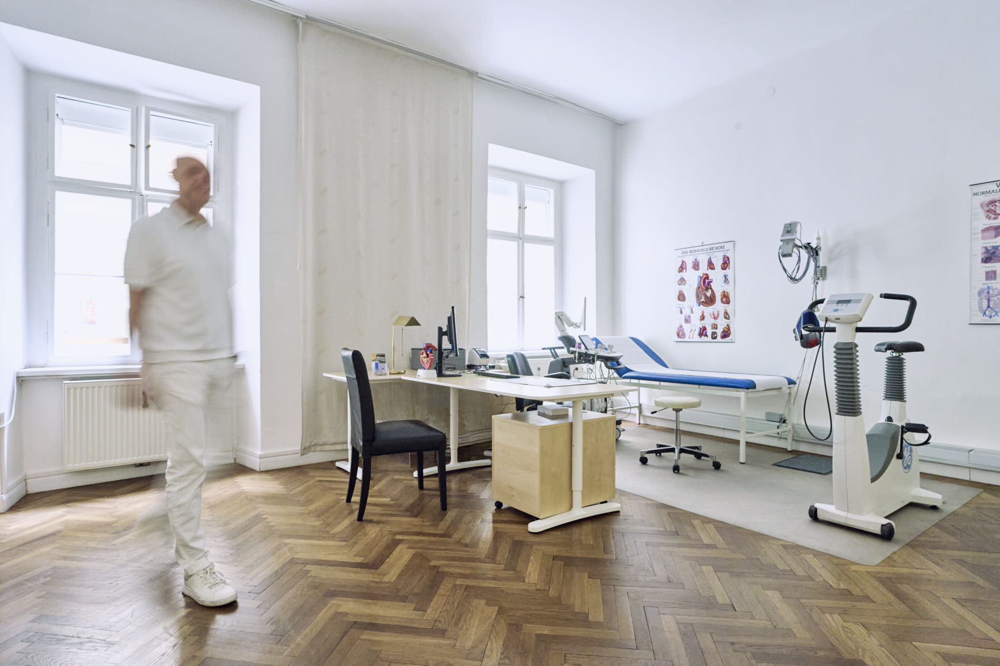

Herzultraschall
Die Echokardiographie zeigt Struktur und Funktion Ihres Herzens in Echtzeit – schmerzfrei und ohne Strahlenbelastung.

In meiner kardiologischen Ordination nehme ich mir die Zeit, die Sie und Ihr Herz verdienen. Modernste Diagnostik, persönliche Beratung und keine Wartezeiten – damit Sie sich von Anfang an gut aufgehoben fühlen.
Als Facharzt für Innere Medizin und Kardiologie ist es mir ein persönliches Anliegen, jeden Patienten ganzheitlich zu betreuen. In meiner Wahlarzt-Ordination in Graz steht nicht die Uhr im Vordergrund, sondern der Mensch.
Durch das Wahlarzt-System kann ich mir die nötige Zeit für ausführliche Gespräche, gründliche Untersuchungen und eine individuelle Beratung nehmen. Sie profitieren von kurzen Wartezeiten, modernster Diagnostik und einer Atmosphäre, in der Sie sich wohlfühlen.
Mehr über mich erfahrenKeine Kassenhektik – ich nehme mir genug Zeit, um Ihnen zuzuhören und Ihre Fragen zu beantworten.
Vom Herzultraschall bis zum Belastungs-EKG – alle wichtigen Untersuchungen unter einem Dach.
Empathie, Vertrauen und höchste medizinische Standards bilden die Grundlage meiner Arbeit.
Meine Ordination bietet Ihnen ein breites Spektrum an internistischen und kardiologischen Untersuchungen – verständlich erklärt und auf Ihre Bedürfnisse abgestimmt.
Die Echokardiographie zeigt Struktur und Funktion Ihres Herzens in Echtzeit – schmerzfrei und ohne Strahlenbelastung.
Messung der Herzströme in Ruhe und unter körperlicher Belastung, um Rhythmusstörungen und Durchblutungsstörungen zu erkennen.
Die Langzeitmessung über 24 Stunden erfasst Ihren Herzrhythmus und Blutdruck im Alltag – für eine besonders aussagekräftige Diagnose.
Vor einem geplanten Eingriff überprüfe ich Ihren allgemeinen Gesundheitszustand und Ihr kardiovaskuläres Risiko sorgfältig.
Eine umfassende Gesundenuntersuchung, die Risikofaktoren frühzeitig erkennt und Ihnen Sicherheit für die Zukunft gibt.
Nach einem Eingriff oder bei chronischen Erkrankungen begleite ich Sie langfristig mit regelmäßigen Kontrollen und persönlicher Beratung.
Vereinbaren Sie noch heute einen Termin in meiner Ordination in Graz. Ich freue mich darauf, Sie kennenzulernen.
Termin vereinbaren